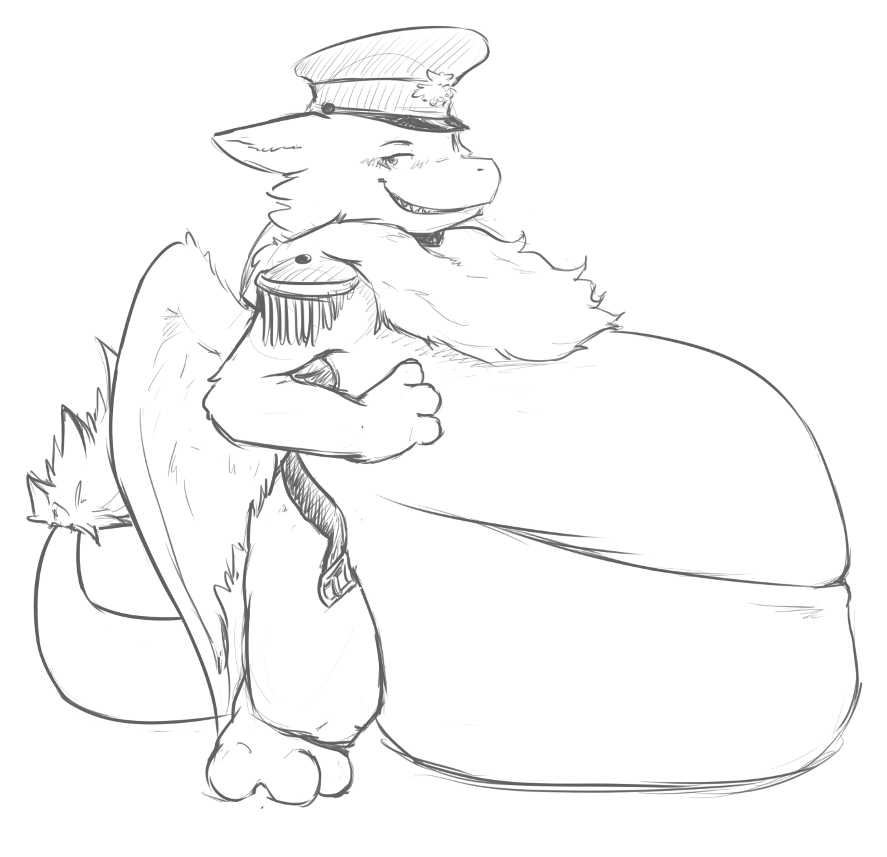

An elevator ride later down to the docks at sea-level my new ship stood before me. The "Attentive"!
It was larger then any ship we had in the east, yet the Admiral had stated it was merely an escort. I had seen some of the hulls under construction, the progress of the future was moving steadily on. It seemed that every time I returned to shore from a mission there was some new innovation and marvel to admire.
The ship had a sleek and slightly long look to it. Its forecastle was larger then the aft one. The forward bow overall was sturdy and the hull around it impressively reinforced. If I had rammed Nipfangs ship with this in full-speed I got the impression I would have cleaved right through them and kept going. But although this ship had a ramming bow its purpose was to protect it in approach or pursuit, no deep-sea ship is ever fully built for ramming.
I'll have to study how the ship handles more closely later. The crew was lining up into rows in anticipation for my arrival, it looked like they had been ready to depart.
My new First-Officer, Arn, came to meet me. He was a gruff looking fellow with large brows that gave him a perpetual frown and a more salt-frayed mane then most Awes i've seen.
His demeanour was just as rough and he clasped paws only briefly before turning toward the arrayed sailors in the distance
"Im Arn, your new First. Lets not keep em waiting, shall we Captain?"
Crew
This is a larger crew then I ever commanded, its one thing to read the numbers and another to have everyone lined up before you standing at attention.
We would be quite over-capacity infact as I was expected to part with some of them when we reached the main-fleet as reinforcements. So despite the size of the ship, with the extra crew and supplies the ship was taking on for this journey, the holds below were going to be cramped. Crew would be sleeping in shifts and even officers were going to have to share quarters. I had to make sure the crew stayed happy and united in purpose.
But as i stood before them and introduced myself, i was struck on fast things had gone. Barely a few week earlier i had set port in the east with hopes of promotion. And here i was, the newcomer who was supposed to lead this large group of unknowns into foreign seas.
The diversity of the crew surprised me too. There were Awes of all tones, taken from all over the lands. Even the Raptorians didnt appear to be all from the same Clan. These were no laborer Raptorians either, they were clearly warriors and stood with a disciplined stillness under the watchful gaze of their Packmaster and Alpha.
Besides them stood a contingent of squires, dedicated Raptorian caretakers and armorers.
They had even assigned me 3 valuable Scouts. Awes with high flight-aptitude and rigorous training to make the best use of it. The three of them stood by themselves off to the side, heavy cloaks covering and protecting their large wings. The leader was a black-furred Raveneye, with eerie yellow eyes that seemed to pierce straight through you when he looked your way.
At the front, with her two assistant nurses stood the Pouch-Matron. The medic and health caretaker of the crew. Her eyes were softer and she smiled with a peaceful soothing softness that spoke well of ability already.
The bulk majority of the rest of the crew, the able sailors, fighters and workers all in one. They looked experienced all, fray-furred wings and manes from long times at sea. Though three younger bright-eyed polished and groomed figures stood out from the rest. Officer Cadets, I had to sigh inwardly.
They had spared no expense for this crew. I was starting to realize more and more how the East-Sea was little but a training-ground for the inexperienced. This is where the true effort and resources of the Admiralty went.
One mysterious cowled figure stood by herself to the side of them all. My manifest said nothing about this individual and the crew appeared to give her wide berth.
After dismissing the crew, keeping the ceremony short, I pointed her out to Arn and he grunted, managing to somehow deepen his scowl even further.
“Priestess that one.” He explained and would have left it at that if I hadent kept staring at him.
“Politics or some other have decreed that each crew over a hundred souls must have a spiritual representative. They are civilians and we're stuck with em. At least its just one.”
“I wasent told about this.” I muttered annoyed, to which Arn shrugged.
“Such is them politics 'cap, rumour has it this one went straight over our dear Admirals cap aswell. There are some faithful in the crew I know. As long as they get their poetry nights there wont be trouble.”
There was not much to add to that so i left it be for now. Whatever my objections this was a decision appears to have been made back in the capital. Hopefully it would not become a problem. Though i could see some objecting already to a civilian being given a quarters, albeit small, of their own when the rest were nearly shoulder to shoulder.
Officers
The officers gathered in the spacious planning room attached to the captains cabin on the ship.
They were a motley bunch of characters, 9 all in all. Some i no doubt would see more of then others as they performed their duties.
Arn, made the introductions. I was increasingly sensing a coldness from him and he was all business in our meeting, revealing little about himself. Time would have to tell how well he'd serve.
Keeper, Logistic-officer. A groomed looking Domestic Wulf with spectacles nodded politely in my direction. He had an orderly and respectable look to him, but I've seen a lot of Wulfs in my day and I knew a mischievous one when I saw one.
Evok, Packmaster. As a Raptorian he took up most of the space of room with his presence. But he was the least animated of them all though, slow and deliberate in his movements. Anything more and he might have broken a wall.
Nyxie, High-officer - Navigation. Nyxie resembled my former First-mate in more then appearance. Attentive eyes and thoughtful demeanor, little seemed to slip past her notice which is an important trait for navigation.
Tick, High-officer - Maintenance. Tick, a small male, looked almost bored and unremarkable, didnt speak once. I wondered at what qualities had seen him promoted to high-officer, no doubt highly qualified in his job.
Tung, Mid-Officer - Arms. Another male, surprisingly large one too, i did not know they came in these sizes. This brute seemed to be wearing a permanent scowl on his face (he'd make quite a pair with Arn), one mostly directed at me. Cant say I liked the look.
Garsch, Mid-Officer – Arms. Sharp, curt and to the point if a little old. His first impression was promising however. He bore an impressive scar that seemed to split his ear and give his right eye a permanent squint.
Mirr, Mid-officer – Crew. Of all the officers, Mirr seemed the youngest and newest. She had a curious choice in mane-styles and a City-Awe stance to her and a smell of tobacco. She seemed out of place but no doubt she was good at managing crew or she wouldn't be here.
Ulv, Mid-officer – Ballistics. Of all my officers, Ulv looked the most predatory and eager of them all. She was itching to get out to sea. Her eagerness was promising.
There were more officers in the crew, Low-officers all, who took orders directly from the Mid and high officers. For now these were the names and crew i'd mostly interact with directly however. I was sure that by the end of this voyage, i'd know the names of all under me.
Confrontation
I laid out the plan as given to me by the Grand-Admiral to my officers and showed them our route and intended rendezvous with the Wulf ships and our intended route further west in pursuit of our main fleet. They all listen attentively and politely, all except one.
Through the whole briefing Tung gets increasingly complacent and sighs and scoffs quietly at my words to the point where ignoring it further would show that im not in control or afraid of confrontation. Perhaps what he's after all along. I had expected to be tested, but not quite so soon.
“Officer Tung!” I eventually snap at him. “Do you have something to add?”
“Why'd they send us another soft-fur from the East is what I wondering!” He began confrontationaly. It takes most at the table aback.
“You question my ability?” I ask acidly, feeling my fur bristle.
“Yeah! Last captain was weak and indecisive. Turned back at the first sign of trouble! You'll be the same, I can tell.”
Arn was starting to clear his throat to diffuse the situation but I raised my paw and silenced him. I was the one had to deal with this. Im not sure what spawned this kind of open hostility and insolence, it was against all Admirality standards of conduct.
Things must have gone seriously out of control on this ship with the previous captain. Despite the Admirals assurances. Or this was some kind of test.
I can nip this problem in the bud right away or spare him with just a firm telling to.
Threaten
I could not have my officers questioning me before we were even under way. As a captain I had to prove myself strong and dominant and not as soft as my fur may have made me look, he wanted tough, i gave him tough.
“Stand down or be downed.” I glowered at him, leaning over the table daring him to question my authority again.
Tung chose to make a mocking huff and crossed his arms, sitting back down. Not exactly cowed but not outright matching my direct threat.
“If there's going to be a problem between us Officer Tung? I can have you thrown off the ship now or just eat you for direct insubordination later. Which will it be?”
Tung seemed to hesitate, perhaps he had expected me to show some form of hesitation or weakness. But i've faced Wulfs half his size that were scarier then him.
"Well!? Do we have a problem?" I snapped.
"You tell me Captain." He muttered glumly, averting his gaze in a cowed manner.
Tung seemed to have laid it to rest but was it enough?
Let it go
I stared at him a long while but Tung remained subdued. The air was absolutely still inside the room. I felt like i had made my point, though i was not entierly satisfied with the result, this was not the time to start depopulating the core officers given to me.
I had to earn the respect of this crew, I knew this. But it would take time.
The meeting continued without interruption.
Eat Tung
"Fine. You're henceforth demoted to status of ration. I will carry out your sentencing. If you'd all excuse us for a moment if privacy.
A rather nonplussed officer cadre hesitated a moment, turned to look at Tung and then filed out of the room. Arn paused briefly but then exited wordlessly.
Tung was heavy, complained loudly but not dumb enough to fight his superior officer, especially while at port. He must have thought i was bluffing up until the moment I swallowed him whole. For Insubordination, contempt and... being hungry. I hadent had a solid meal in my long trip west and have to admit I was cranky.
But truth be told, I recognized Tungs type straight away. They can be solid officers and loyal to a fault, but only if you gain that loyalty to begin with. Otherwise they will find every opportunity to undermine you for their own agendas.
Problem is that they rarely gain that attitude alone, there are deep-rooted problem somewhere in this crew.
For now, this problem is deep in my gut. I called the officers back and resumed the meeting. No one made further remarks and chose to ignore any errant noise.
Diplomatic
I pinned him to the spot with a hard glare. Undaunted by his direct accusation of incompetence.
“Are you some sort of mystic Officer Tung?” I asked him with hard tone.
He frowned at the question and then shook his head.
“No... but..” He started before I interrupted him.
“Are you perhaps above the Grand-Admiral?” I snapped quicker.
“No, I am...”
“Then don't embarrass yourself further with your insights. Perhaps go take it up with the Grand-Admiral up at the headquarters, I am sure she'd love to hear what you think about her judgement in Captains. Shall I send you up there, we're still in port.”
Officer Tung visibly bit his lip and looked flustered. He was getting no support from the others as his eyes searched around. Arn seemed to shake his head slightly at him.
“No...” He finally spoke in a low voice. “I'll be fine. I spoke out of turn.”
Tung looked subdued, but the air was still thick with tension. He would probably not question me further for now. I had to earn the respect of this crew, I knew this. But I was already off to an uneasy start.
The meeting continued without interruption.
The Attentive
I took a tour around the ship “Attentive” to get my bearings of the vessel I was now to command and live on for some time to come.
It was larger then any ship we had in the east, yet the Admiral had stated it was an escort. I had seen some of the hulls under construction, the progress of the future was moving steadily on. It seemed that every time I returned to shore from a mission there was some new innovation and marvel to admire.
The ship had a sleek and slightly long look to it. Its forecastle was larger then the aft one. The forward bow overall was sturdy and the hull around it impressively reinforced. If I had rammed Nipfangs ship with this in full-speed I got the impression I would have cleaved right through them and kept going. But although this ship had a ramming bow its purpose was to protect it in approach or pursuit, no deep-sea ship is ever fully built for ramming.
I'll have to study how the ship handles more closely later.
Despite the size of the ship, the holds below were cramped. Made worse by the amount of extra crew and supplies the ship was taking on for this journey. Crew would be sleeping in shifts and even officers were going to have to share quarters. I had a modest captains quarters for myself. I had to make sure the crew stayed happy and united in purpose